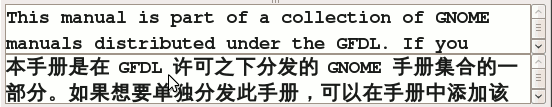
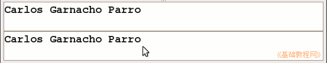
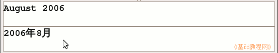
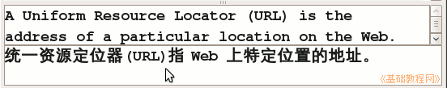
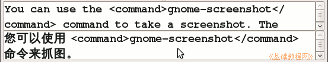
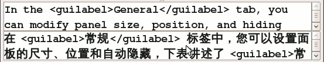
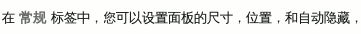
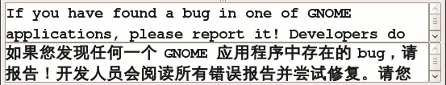
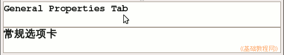

Poedit 基础教程
作者：TeliuTe 来源：基础教程网
翻译到中文有一些约定，便于统一和阅读，下面我们来看一个练习；
1、基本规范
1）中英文之间用空格分开，便于区分和阅读；

2）人名一般不翻译，保留原来的英文；

3）日期翻译保持紧凑，数字和文字间不加空格；

4）标点符号中，逗点翻译成逗号或顿号，句点根据上下文翻译成句号或逗号，圆括号用英文，且前后不留空格；

5）尖括号里面是标签文本，一般是成对的，标签本身不翻译，命令行和参数也不翻译，带有 -- 的是命令参数；

6）为了突出标签括起来的文本，可以在标签前后加一个空格，以便于阅读注意力；

程序中的最终显示效果：

7）请使用“您”和“请”等较为礼貌客气的用法，便于愉快地阅读，保持原文的语气；

8）词语翻译前后一致性，并符合简体中文习惯，帮助文档的翻译应以程序界面为基准，
例如这儿的“选项卡”也可以翻译成“标签”，类似都应相同翻译；

本节学习了翻译的基本规范，可以多参考借鉴其他人的翻译，如果你成功地完成了练习，请继续学习下一课内容；
本教程由86团学校TeliuTe制作|著作权所有
基础教程网：http://teliute.org/
美丽的校园……
转载和引用本站内容，请保留版权信息和本站链接。